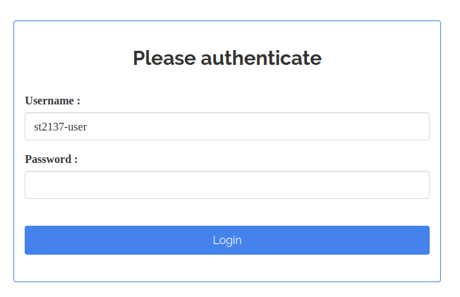
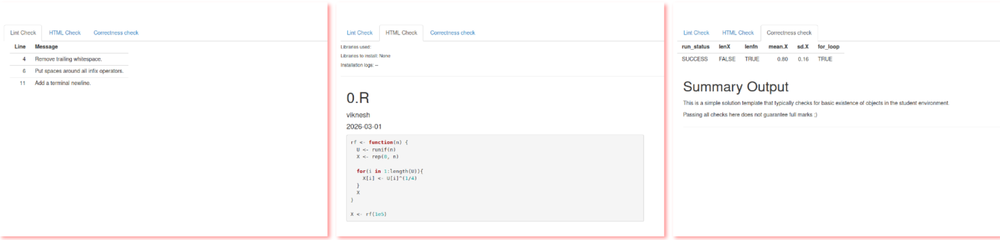

Shiny App: Solution Checker
shiny_soln_checker.RmdThe solution checker shiny web application is a student-facing application. It is meant to be deployed on a server that is accessible to students, prior to the actual submission of their solution. Students can use it to ensure that the instructor will be able to run their code smoothly upen actual submission. In the workflow of , the deployment of the solution checker is optional. However, the use of the application greatly assists in weeding out common errors that prevent the instructor from being able to run the student’s code. These include:
- Incorrect path settings. Especially in the initial weeks of a course, it is common for students to use absolute path settings instead of a relative path, that mirrors the instructor’s set-up. While there are packages that attempt to identify and correct the path setting, this goes against the principle of the course - to get students to accommodate the coding conventions of a team.
- Case mismatch between student-generated R objects, and the objects required by the solution template.
- Objects missing from the student environment.
To deploy the solution checker, the instructor should have access to a shiny server. Since students will be submitting code that will be executed on the server, the instructor needs to take precautions. The first is to ensure that the shiny applications are not run as the privileged user. The second is to ensure that only students from the course have access to the application. This feature is already built into the application, since it requires a database of users who will be authenticated before they can access the application. This authentication is carried out using shinymanager. Finally, if possible, the instructor could situate the server behind a VPN, thus preventing complete and unfettered public access to the server.
The solution checker relies on functions within the itself. To use
it, a student selects the appropriate solution template, uploads their
script, and finally hits Submit. The application will then render the
script to html format, using render_one. The rendered html
file is presented in the first tab, while a set of correctness checks
are presented in the second tab.
It should follow from the above outline, that the solution checker can be used for multiple assignments; the instructor can prepare a minimal solution template for each of these, and store them on the server. When the server initially begins, a separate solution environment will be generated for each of the solution templates. This avoids having to re-generate solution environments every time a new user establishes a connection and submits a script.
Here is an outline of the files in the shiny application directory:
list.files(system.file("shiny", "solution_checker", package="autoharp"))
#> [1] "app.R" "db_creation.R" "R" "README.md"
#> [5] "soln_templates"-
app.R: Contains the UI (User Interface) and server logic for the application. -
db_creation.R: A helper script to create an SQLite database containing usernames, passwords and roles. -
R/: A folder containing a single fileglobals.R. This contains deployment-specific information, such as paths to datasets, working directories, and so on. -
README.md: A quick guide to get started with using the solution checker. -
soln_templates/: A folder containing all the solution templates that will be available for students to use, when the server is deployed.
Within db_creation.R, the function call to
shinymanager::create_db creates an encrypted database.
Encryption is carried out using the passphrase stored in the environment
variable AUTOHARP_TUNER_DB_KEY.
create_db(credentials_data = credentials,
sqlite_path = "st2137.sqlite",
passphrase = Sys.getenv("AUTOHARP_TUNER_DB_KEY")
)This same environment variable must also be present on the deployment
server. The simplest way to set the environment variable is to include
it in a file named .Renviron within the shiny application
folder. The script db_creation.R does not need to be kept
on the server; only the database, which is currently named
st2137.sqlite, needs to be on the server.
The user interface (UI) of the server is defined in
app.R. When a student navigates to the page, they will
first encounter the password input dialog box.

The main UI consists of a sidebar on the left, where the student selects the appropriate template for their script, uploads their own script, and clicks “Check solution!”.

After the application has processed the student script, the output will be shown in three tabs. The leftmost tab lists lints. These are style checks, that will help to enforce good coding habits in students. The second tab displays the rendered HTML version of the script. If this appears without errors, then the student can be confident that the instructor will be able to run the script. Finally, the rightmost tab displays basic correctness checks. If one of these fail, the student would be encouraged to check their code to fix the problem before submitting their script.

Apart from the database creation, all server configuration is managed
through the file globals.R that is situated within the
R/ folder of the application. These are the most important
settings to take note of:
soln_templates_dir <- "/home/viknesh/NUS/coursesTaught/autoharp/mytesting/secure_tuner/soln_templates"
knit_wd <- "/home/viknesh/NUS/coursesTaught/autoharp/mytesting/secure_tuner/"
permission_to_install <- FALSE
max_time <- 120
summary_header <- "# Summary Output"
tabs <- c("lint", "html", "correctness")
app_title <- "R Solution Checker"
corr_cols_to_drop = c(1,2,4,5)
db_key <- Sys.getenv("AUTOHARP_TUNER_DB_KEY")The first set of 4 lines above configure how render_one
will be executed by the solution checker application.
The next set of 5 lines pertain directly to the application.
The summary_header is used to indicate which portion of
the solution template file should be extracted and displayed to the
student under the “Correctness check” tab. This can be used by the
instructor to convey information to the student about the purpose of the
server.
The tabs variable indicates which of the three output
tabs should be generated; the instructor may not want to show lints, for
instance.
The corr_cols_to_drop specifies that certain columns
from the raw correctness check output can be dropped before displaying.
In the above output, the columns fname,
time_stamp, run_time and run_mem
are dropped, since they are more useful to the instructor rather than
the individual student.